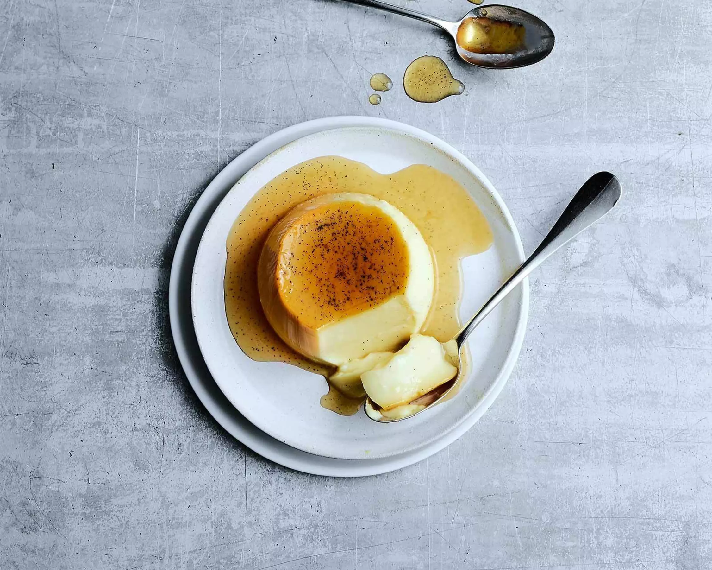

Caramelköpfli
Zutaten für 4 Förmchen
- 80 g Zucker (für den Caramel)
- 3 dl Milch
- 1 dl Rahm
- 1 Vanilleschote, längs aufgeschnitten, Samen ausgekratzt
- 3 Eier
- 40 g Zucker
Zubereitung
- Für den Caramel Zucker in einer Pfanne bei mittlerer Hitze schmelzen, ohne Rühren, bis er goldbraun ist. In die Förmchen giessen und verteilen.
- Milch, Rahm, Vanillemark und -schote aufkochen, vom Herd nehmen. Etwas abkühlen lassen, Schote entfernen.
- Eier und Zucker verrühren, Milch-Rahm-Mischung langsam dazurühren. Mischung durch ein Sieb in die Förmchen giessen.
- Förmchen in eine Auflaufform stellen. Heisses Wasser bis zur halben Höhe der Förmchen einfüllen (Wasserbad).
- In der unteren Hälfte des auf 160 °C vorgeheizten Ofens ca. 45 Min. garen. Abkühlen lassen und mindestens 2 Stunden kühl stellen.
- Zum Servieren: Förmchen kurz in heisses Wasser stellen, Kanten lösen und auf Teller stürzen.
Tipp
Wer’s besonders fein mag, kann die Masse zusätzlich mit etwas Orangenabrieb oder Espresso aromatisieren.